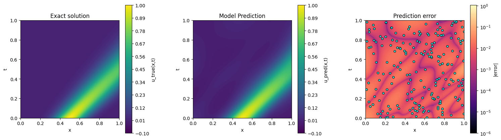
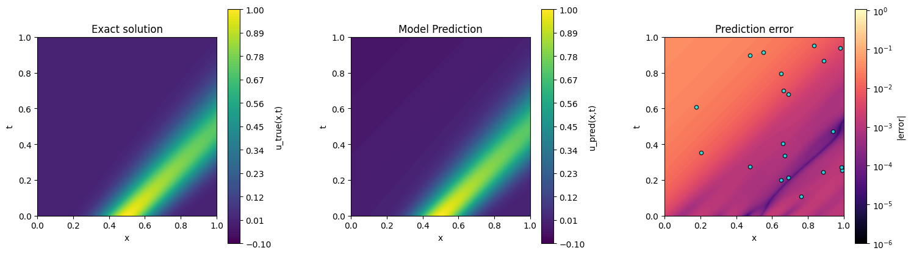
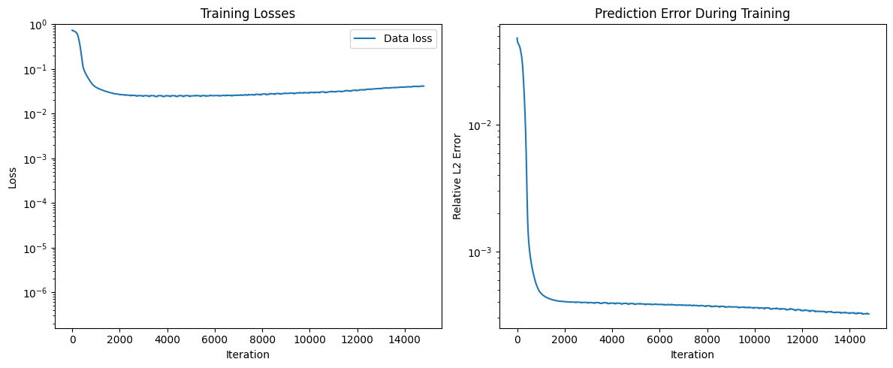
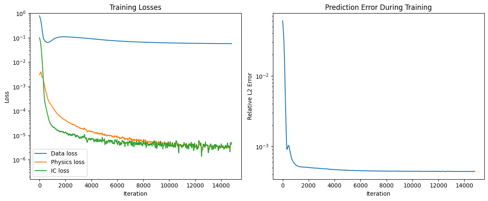
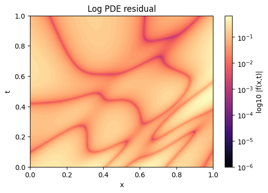
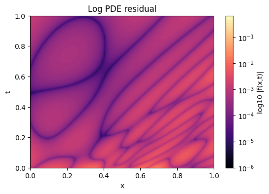

This project investigates whether incorporating physical laws into neural networks improves prediction accuracy when training data are sparse. I implemented and compared two models for solving a simplified 1D advection-diffusion equation, which describes the transport and diffusion of a scalar quantity such as pollutant concentration in flowing water.
Summary
The objective of this project is to investigate whether incorporating physical constraints improves prediction accuracy when training data is sparse. I investigated this because it was close to a realistic scenario where we might be looking at such as sewer flow with a limited number of sensors.
We use a simplified 1D flow equation, the advection-diffusion equation:
Meaning of each term:
Train a neural network to learn using only data points with a loss function of:
Use the same network but including physics in the loss function.
Physics residual:
Physics loss:
Total loss:
where \( \lambda \) controls the weight of the physics constraint.
Initial condition - Gaussian pulse:
\[ u(x, 0) = e^{-50(x-0.5)^2} \]
This can represent a localised pollutant spill at the centre of the river, diffusion spreads the plume, and advection moves it downstream. The advantages of this are: that it is a smooth function, produces easily interpretable results, widely used in transport modelling.
Six figures are used to evaluate the performance of the standard neural network (NN) and the physics-informed neural network (PINN). The comparison focuses on prediction accuracy, training behaviour, and satisfaction of the governing advection-diffusion equation.


Figures 1 and 2 compare the predictive performance of the standard neural network (NN) and the physics-informed neural network (PINN) with the input data for each model overlayed on the Predicted error plot. Figure 1 shows the NN prediction alongside the exact analytical solution and its corresponding error. Because the NN was trained on more data points, it achieves a slightly lower relative L2 error on the test grid (\(4.104 \times 10^{-2}\)) compared with the PINN \((5.860 \times 10^{-2}\)). However, the NN’s predictions deviate noticeably from the exact solution in regions with sparse data, suggesting potential overfitting to the provided dataset. Figure 2 shows the PINN results, which, although slightly higher in relative L2 error, more accurately reproduce the transported Gaussian pulse across the full spatial domain and maintain consistency with the governing advection-diffusion equation.


A comparison of the training behaviour highlights differences between the two models. Figure 3 shows the training dynamics of the standard neural network, which was trained on \(200\) observation points. The NN achieves a slightly lower relative L2 error on the test grid \((4.104 \times 10^{-2}\)) compared with the PINN \((5.8597 \times 10^{-2}\)), but the prediction error fluctuates more during training and may indicate overfitting to the dense training data. Figure 4 presents the physics-informed neural network, trained on only \(20\) observation points, including the data loss, physics residual loss, and prediction error. Despite the smaller dataset, the PINN converges more stably and maintains consistency with the governing PDE, demonstrating better generalization and adherence to physical laws across the domain, even with fewer training points.


Comparing the PDE residuals of the two models highlights substantial differences in physical consistency. Figure 5 shows the logarithm of the residual across the domain for the standard neural network, which produces a large average PDE residual on the test grid of \(1.4344 \times 10^{-1}\), indicating limited adherence to the governing advection-diffusion equation. In contrast, Figure 6 shows the physics-informed neural network, which achieves a much smaller average PDE residual of \(1.2427 \times 10^{-3}\) on the test grid. This significantly lower residual demonstrates that the PINN solution closely satisfies the physical law across the domain, even though it was trained on far fewer observation points.
This study demonstrates the comparative strengths of standard neural networks (NNs) and physics-informed neural networks (PINNs) for modeling 1D advection-diffusion processes with limited data. While the NN, trained on 200 observation points, achieves a slightly lower relative L2 error on the test grid \((4.104 \times 10^{-2}\)) compared with the PINN, which was trained on only 20 points \((5.8597 \times 10^{-2}\)), this improvement appears to result from overfitting to the dense training data rather than true physical generalization. The PINN, despite having fewer training points, more accurately reproduces the Gaussian pulse across the spatial domain and maintains consistency with the governing advection-diffusion equation.
Analysis of training dynamics shows that the NN exhibits larger fluctuations in prediction error during optimization, suggesting sensitivity to the specific training set. In contrast, the PINN demonstrates stable convergence, effectively balancing the data-driven loss with the physics-informed residual. This is further reflected in the PDE residual analysis: the NN produces a large average residual on the test grid (\(1.4344 \times 10^{-1}\)), indicating weak adherence to the physical law, whereas the PINN achieves a substantially lower residual \(1.2427 \times 10^{-3}\)), confirming strong consistency with the governing equation even with limited observations.
Overall, these results highlight the value of incorporating physical constraints into neural network training. PINNs provide robust predictions and respect the underlying PDE, making them particularly suitable for scenarios with sparse or incomplete data, while standard NNs may perform well on the observed dataset but risk overfitting and reduced generalization beyond the training points. This demonstrates that physics-informed approaches can improve reliability and interpretability in computational fluid dynamics modeling.